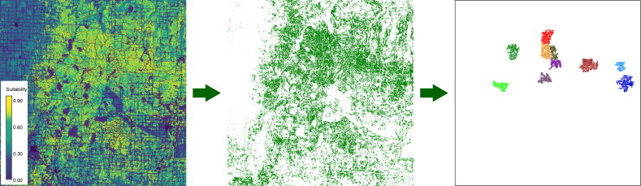
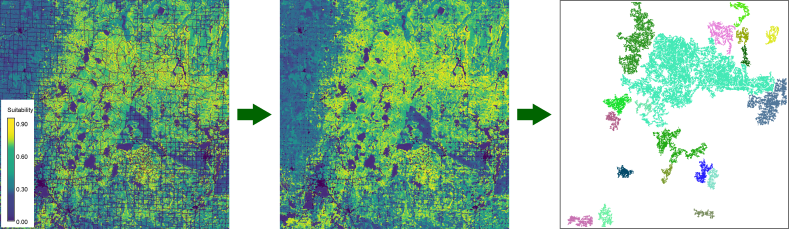
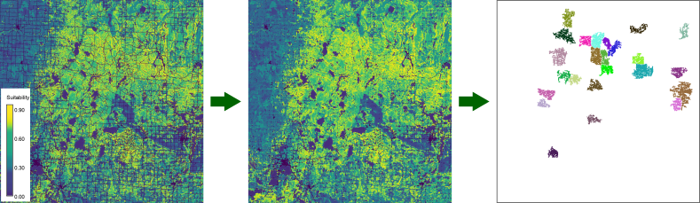
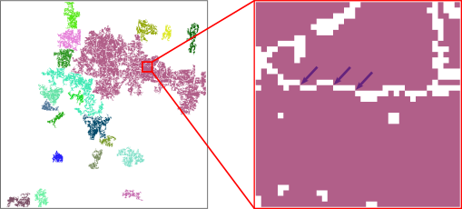
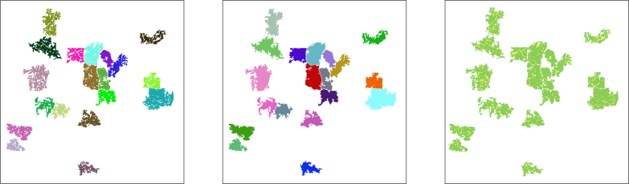

Often, the next step is to use this suitability map to identify suitable area/region, e.g., to delineate potential areas for nature conservation. With this addon you can identify regions of contiguous cells that have a suitability score above a certain threshold and a minimum size. There are a number of additional options explored below.

Figure 1: identifying regions of
contiguous raster cells with a suitability score of 0.7 or
more.
You would use this to find suitable areas for a species that cannot or is not likely to venture into areas where conditions are not optimal.
1 1 2 2 1 4 4 1 3 1 1 3 2 1 4 5 2 1 3 2 1 2 3 2 1
Next, the resulting output map is used instead of the original suitability map to identify the raster cells with a score equal to or above the user-defined threshold value. So, raster cells are selected if they have a suitability score equal or above the threshold value, or if at least one raster cell (maximum), half of the raster cells (median), 25% of the raster cells (1st quartile), or 75% of the raster cells (3rd quartile) in the neighborhood have a suitability score equal or above the given threshold.
As in the first use case, the selected raster cells are clumped into contiguous regions, and regions that are smaller than an user-defined size are removed. This option would be a good choice if the target species has no problem to briefly stay in non-suitable habitat, e.g., to cross it on their way to more suitable habitat. As the example below shows, it results in larger regions than in the previous option.

Figure 2: Like figure 1, but based on the
median suitability scores of the neighboring cells within a radius of
300 meter (3x3 moving window).
The minimum suitability score can be used to identify barriers or areas where a species cannot cross. For example, a road can break up larger regions of otherwise suitable habitats into smaller fragments. For species that cannot cross roads, this effectively results in smaller isolated populations rather than one large (meta-)population. It can even result in a net loss of habitat if one or more of the fragments are too small to maintain a population (the user can set a minimum area size to account for this).

Figure 3: Like figure 2, but considering
raster cells with suitability 0 (mostly roads) as absolute barriers.
Diagonally connected raster cells are not considered to form a
contiguous region.
Note that for line elements like roads, results may differ if the option to 'include the diagonal neighbors when defining clumps' (flag d) is selected. For example, in figure 4, diagonally connected cells are considered as neighbors. As a consequence, the suitable areas on both sides of the road are considered to be part of the same region. I.e., the road does not act as a barrier here.

Figure 4: Like figure 3, but this time,
diagonally connected raster cells are considered to form a contiguous
region.
This option can be used to end up with more compact areas. This may be desirable for visualisation purposes, or it may in fact be acceptable to include such areas in the final selection of a region.

Figure 5: Like figure 3 (left), but here
gaps (areas within a suitable region) of 500 hectares or less were
included in the final selection (middle). The right map shows the
suitable areas within the selected regions (green) and the filled gaps
(yellow).
Selecting this option will generate a second map which shows the 'filled patches'. This makes it easier to e.g., inspect the feasibility or desirability to actually include these areas in a protected area.
To compare the compactness of the resulting regions, the compactness of an area is calculated using the formula below (see also v.to.db.
compactness = perimeter / (2 * sqrt(PI * area))This will create a layer with the basename with the suffix 'compactness'. The compactness will also be calculated as one of the region statistics if the option to save the result as a vector layer is selected (see under 'other options' below.
Selecting the 'v' flag will create a vector layer with the regions. The attribute table of this vector layer will include columns with the surface area (m2), compactness, fractal dimension (fd), and average suitability. For the meaning of compactness, see above. The fractal dimension of the boundary of a polygon is calculated using the formula below (see also v.to.db.
fd = 2 * (log(perimeter) / log(area))The option to calculate the area of clumped regions should be used with projected layers only because the assumption is that all cells have the same size.